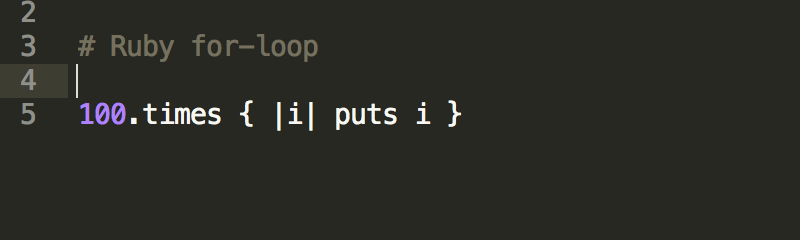
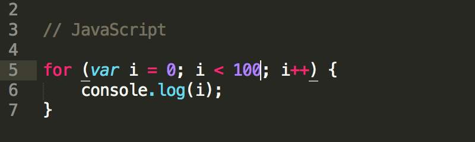
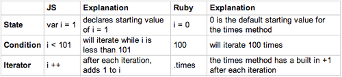
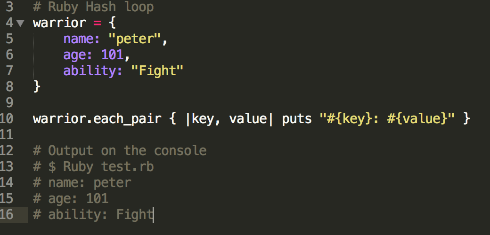
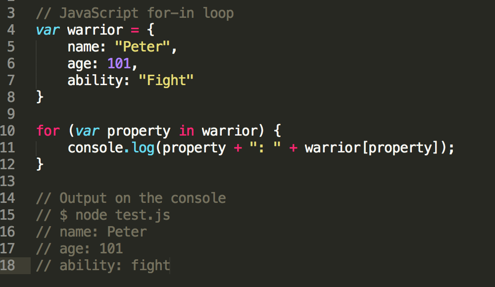

DBC week 7: Technical blog
Loop with Ruby vs. JS
Established on Jan. 23, 2016
Looping is one of the basic but yet one of the most important idea about programming. We expect computers to help us complete tedious tasks then free us from it to do other work for the sake of efficiency. That's why we need looping to automate similar actions. This week, since we are in the middle of the transition from Ruby to JavaScript, I want to take this chance to talk about iteration in Ruby vs. iteration in JavaScript.
Here is a simple example of iteration in both Ruby and JavaScript. Say, we want to count 99 times starting from 0. Both will print out 0 to 99 on the console.
 As you may have noticed, Ruby seems to be more syntactical, intuitive. While JavaScript requires more words to complete the same task. Below is a table to explain the above two looping action.
In each example, you will find both iteration consist of three parts.
- 1. State of iteration
- 2. Condition to determine whether the loop should continue or terminated.
- 3. Iterator to keep track with the current state and update it after previous iteration.
Here is another example to loop over hash (in Ruby) and object (in JS).
 Since Ruby is well-known of its readability, it has many built-in methods that handle challenging situations. In Ruby, we have Array#each, Array#each_index, Array#map, Array#select for looping an Array. To loop through a Hash, we have Hash#each, Hash#each_pair, Hash#map. On the other hand, in JavaScript, we have less intuitive methods. Rather, we use for-in loop to loop through Object (JS version of Ruby's Hash).
Although Ruby and JavaScript are both commonly use in the industry, they have their own specialty. JavaScript is a client-side language and Ruby is server-side. So typically you would use each language for its respective purpose.